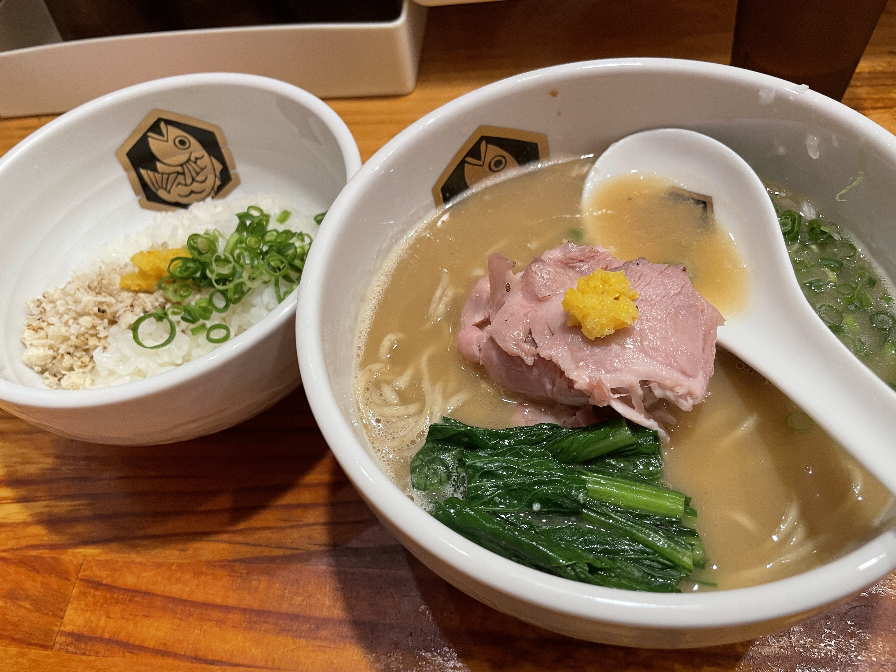

My Profile
| Name | Kazuya Sasaki |
|---|---|
| Picture | |
| Birthday | 02/16 |
| Blood type | A |
| Address | Tokyo |
| Job | Programmer & Teacher |
| Hobby | Vietnamese, English, Cooking and Drawing |
My Recommended
what do you want to know?

私のおすすめラーメンBEST 3
年間１００杯以上食べた中で、本当に美味しかったラーメンBEST3をみなさんにお伝えします。
ガチレビュー付きなので、見たい方は、ボタンをクリック！！
My Favorite
what do you want to know?
| # | |
|---|---|
| SPORTS | サッカー。浦和レッズファンです。海外だとFCBarcelonaが好きs |
| COLOR | 赤です。なぜって...浦和レッズですから。 |
| MOVIE | あまり見ないですが..StarWarsシリーズだったりSF系は好きです。ホラーは一番苦手です。 |
昔にずっとはまっていたのは、スマブラとウイイレが好きです。（最近はやっていませんが..）
仕事の関係でウマ娘やモンストなどのソシャゲは、時々ります。
みなさんのおすすめゲームと強いウマを育てる方法教えてください。
仕事の関係でウマ娘やモンストなどのソシャゲは、時々ります。
みなさんのおすすめゲームと強いウマを育てる方法教えてください。
宇宙兄弟 / One Piece / Hunter×Hunter / キングダム / Dr.stoneなどが好きです。
みなさんのおすすめの漫画を教えてください。
みなさんのおすすめの漫画を教えてください。
Youtube大学（中田敦彦さん）、シリエン戦隊JUN TV（酒井潤さん）、その他もろもろ...